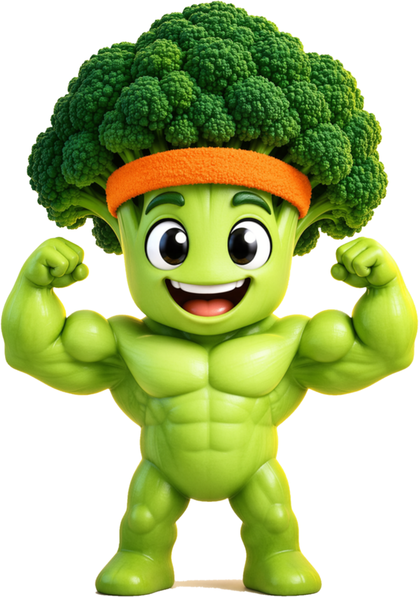

Dein veganer Sport-Coach. Wissenschaftlich belegt.
Frag Brocco alles rund um Protein, Muskelaufbau, B12, Eisen und Supplements. Jede Antwort stützt sich auf Studien – und Brocco weiß, wo REWE, dm & Co. dein Protein am günstigsten haben.
Du bekommst eine E-Mail zum Bestätigen. Kein Spam, keine Kosten, jederzeit abmeldbar. Mehr in der Datenschutzerklärung. Oder folg uns auf TikTok @broccolab.

Keine Bro-Science.
Proteinbedarf, Leucin, B12, Eisen, Kreatin: Brocco antwortet auf Basis von über 130 ausgewerteten Studien – und sagt dir auch, wenn die Studienlage unklar ist.
Dein Coach. Frag alles.
Sag einfach, was du gegessen hast. Brocco loggt es, behält deine Ziele im Blick und schlägt dir vor, was du ändern kannst.
Weiß, wo's am günstigsten ist.
Echte Produkte und Preise von REWE, dm und weiteren Märkten – zum Beispiel, welches Protein dich pro 100 g am wenigsten kostet.
So klingt Brocco
Fragen
Wann kommt die App?
Geplant ist der Start im App Store im Januar 2027. Wer auf der Warteliste steht, erfährt es zuerst.
Was kostet BroccoLab?
Das steht noch nicht fest. Die Warteliste ist kostenlos und unverbindlich.
Ersetzt Brocco meine Ärztin oder meinen Arzt?
Nein. BroccoLab gibt Informationen zu Ernährung und Training, keine medizinische Beratung. Bei Blutwerten, Beschwerden oder Vorerkrankungen sprich bitte mit deiner Ärztin oder deinem Arzt.
Muss ich vegan sein?
Nein. BroccoLab ist für alle, die vegan leben oder weniger Fleisch essen wollen – und dabei sportlich und stark bleiben möchten.